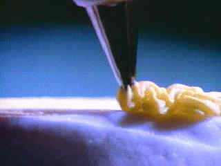

עוגת מייפל
עוגת מייפל
אורירית
פרווה
העוגה המושלמת לשבת בבוקר

מעט על המתכון
המתכון התפרסם עי אמא לחייל שנהרג בשבעה באוקטובר
המתכון מושלם לשבתות קיץ ארוכות
כותרת3
כותרת4
מצרכים
- חצי כוס מייפל
- ארבעה ביצים
- חצי כוס שמן
- כוס קמח
- חצי כוס סוכר
- אבקת אפיה
אופן ההכנה
- מקציפים את הביצים
- מוסיפים לקצף את המייפל והשמן עד לקבלת תערובת אחידה
- מוסיפים בערבוב איטי את שאר המצרכים
- את התערובת שהתרבלה מכניסים לתוך תבנית משומנת
- מכניסים לתנור על 180 מעלות לחצי שעה
נתוני המתכון
נתוני המתכון
| שלב |
פעולה |
זמן בדקות |
| 1 |
מקציפים את הביצים |
20 |
| 2 |
מוסיפים לקצף את המייפל והשמן עד לקבלת תערובת אחידה |
| 3 |
מוסיפים בערבוב איטי את שאר המצרכים |
5 |
| 4 |
את התערובת שהתרבלה מכניסים לתוך תבנית משומנת |
2 |
| סך הכל זמן הכנה פעיל |
27 |
| דרגת קושי: בינוני |
טיפים
- בריםמומלץ לחמם את התנור מראש
- לקבלת מרקם כיפי הוסיפו חצי כוס מייפל רותח על העוגה המוכנה עם יציאתה מהתנור
- את ההשראה לעוגה המושלמת לקחנו מתוך
מתכון לעוגת מייפל.